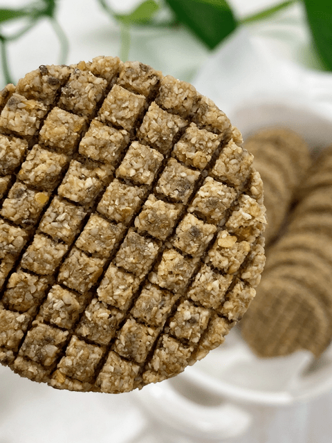

Granola Morning Biscuits

Healthy goodness in every bite… these Granola Morning Biscuits are made from a wide variety of seeds, coconut, lucuma, and salt. My intention was to create a grain-free, gluten-free, and low-sugared morning biscuit.
Commercial varieties of granola biscuits are often loaded with enough added sugar to rival a slice of chocolate cake. They are widely marketed as wholesome and natural or made with whole grains, which helps to give the products a health halo.
I like the idea of positioning a health halo over these biscuits; this lead me to ponder over what kind of sweeteners that I wanted to use. After much contemplation, I decided to use lucuma as the primary sweetener and backed it up with a little liquid NuNaturals Stevia to “brighten” the overall sweetness.
If you are new to lucuma, it is an exotic, slightly sweet subtropical fruit grown in South America. The taste of lucuma has a distinctive fragrance and is full-bodied with rich flavors of maple, custard, and caramel. Can you image the taste of maple-like-butterscotch shortbread? It’s sort of like that! You can read more about Lucuma (here).
As far as the foundation of this biscuit, the flavor is rich in sunflower and pumpkin seeds, so if you aren’t a fan of those, you could easily substitute with nuts. The texture is chewy, yet firm. You can control this through the dehydration process. The more moisture you leave in them, the softer they will be. I served these biscuits with my Raspberry Basil Date Jam.
 Ingredients
Ingredients
yields 36 biscuits (1/4″ thick – 2″ round)
- 2 cups (205 g) raw sunflower seeds, soaked
- 1 cup (100g) macaroon finely shredded coconut
- 1/2 cup (93 g) raw pumpkin seeds, soaked
- 1/3 cup (45 g) lucuma powder
- 1/4 cups (40 g) coconut sugar
- 1/4 cup (40 g) golden flax seeds
- 1/4 cup (45 g) chia seeds
- 1/2 – 1 tsp (7 g) sea salt
- 1 cup (240 g) water
- 1 Tbsp (11 g) vanilla extract
- 1/2 tsp (1 g) NuNautrals liquid stevia
Preparation
- In the food processor, combine all sunflower seeds, coconut, pumpkin seeds, lucuma, coconut sugar, flax seeds, chia seeds, and salt until everything is broken down to a fine powder (or close to).
- Add the water, vanilla extract, and stevia. Process until the batter is well combined.
- Lay a piece of plastic wrap on the counter, place the batter in the center, and lay another piece of plastic wrap over the top. Roll the dough out to 1/4″ thickness.
- Using a circular cookie cutter, create the biscuit shapes, transferring them from the plastic one by one to the mesh sheets that come with the dehydrator.
- For added flair, I created the line graphic with the edge of a stainless steel ruler.
- Dehydrate at 145 degrees (F) for 1 hour, then reduce to 115 degrees (F) and continue to dry to 10+ hours
- Taste test them throughout the drying process so you can how moist or dry you want them.
- Store in an airtight container on the counter for several weeks or in the freezer for several months. If you leave a lot of moisture in them, the shelf-life will decrease.
© AmieSue.com